Election results: Fedora 32 - 2020
Overview
Below are the results of the election Fedora 32 from 2020.
| Name | Votes | Image | ||
|---|---|---|---|---|
| 1 | Scituate Lighthouse | 81 |

|
Author: Evan Shortiss License: CC-BY-SA |
| 2 | Groyne Lighthouse Before Dawn | 75 |

|
Author: Vladimiro G. Zelaya License: CC-BY-SA |
| 3 | Afternoon at Mount Osmond | 66 |

|
Author: firstyear License: CC-BY-SA |
| 4 | Life is Blue 2 | 65 |

|
Author: persianuser License: CC-BY-SA |
| 5 | The White Mountains, NH | 61 |

|
Author: Evan Shortiss License: CC-BY-SA |
| 6 | Snowfield and Golden Hour | 60 |

|
Author: Krevic Ales License: CC-BY-SA |
| 7 | Night Sky | 55 |

|
Author: Caleb Woods License: Free Art |
| 8 | Isarfrost | 55 |

|
Author: Sebastian Glasl License: CC-BY-SA |
| 9 | Reflections | 54 | 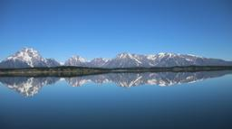 |
Author: ronvau License: Free Art |
| 10 | Gardens by the Bay in Singapore | 53 |

|
Author: Laura Beth Moses License: CC-BY-SA |
| 11 | Ambosli Sunset | 53 | 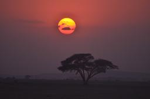 |
Author: gm221 License: CC-BY-SA |
| 12 | Nature | 52 |

|
Author: ronvau License: Free Art |
| 13 | Sloped Earth | 51 |

|
Author: clarkstefanic License: CC-BY-SA |
| 14 | Ocean Approach | 45 |

|
Author: cprofitt License: CC-BY-SA |
| 15 | Blue Bell | 45 |

|
Author: cprofitt License: CC-BY-SA |
| 16 | Old Wood | 44 |

|
Author: Maximilien Richer License: CC-BY-SA |
| 17 | Calming Sunset | 42 |

|
Author: Marko Saric License: CC-BY-SA |
| 18 | Chilean Desert | 42 |

|
Author: evillagr License: CC-BY-SA |
| 19 | After the Storm | 42 |

|
Author: Graziano Capelli License: CC-BY-SA |
| 20 | White Sea placidity | 42 |

|
Author: jacky7st License: CC-BY-SA |
| 21 | Rockface | 41 |

|
Author: clarkstefanic License: CC-BY-SA |
| 22 | fortami | 41 | 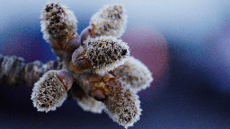 |
Author: tj314 License: CC-BY-SA |
| 23 | sycamore archway | 36 |

|
Author: jacky7st License: CC-BY-SA |
| 24 | Cat | 34 | 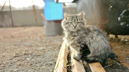 |
Author: Babkin Stanislav License: DSL |
| 25 | A poppy in blue | 32 |

|
Author: Carlos Canau License: CC-BY-SA |
| 26 | A bee | 31 |

|
Author: Honza Kašík License: CC-BY-SA |
| 27 | Blossoms | 29 | 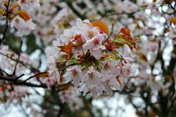 |
Author: decathorpe License: CC-BY-SA |
| 28 | Kola Peninsula | 29 |

|
Author: Babkin Stanislav License: DSL |
| 29 | Sunset on the Baltic Sea | 28 |

|
Author: roypen License: CC-BY-SA |
| 30 | Air clouds | 27 |

|
Author: wolnei License: CC-BY-SA |
| 31 | Drenching drip drops | 27 |

|
Author: nharvey License: CC-BY-SA |
| 32 | Towards Home | 27 |

|
Author: Graziano Capelli License: CC-BY-SA |
| 33 | Ahead | 24 |

|
Author: afsilva License: CC0 |
| 34 | Fall Colors | 24 | 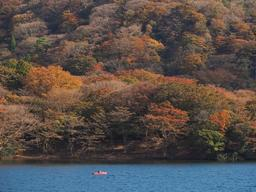 |
Author: bbarve License: CC-BY-SA |
| 35 | The beach at Old Bar | 23 | 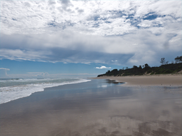 |
Author: joefidler License: CC-BY-SA |
| 36 | Splash Magic | 22 |

|
Author: djremo License: CC-BY-SA |
| 37 | Orchids | 21 |

|
Author: Graziano Capelli License: CC-BY-SA |
| 38 | Swan's back | 20 |
Author: nharvey License: CC-BY-SA |
|
| 39 | Airspace | 18 |

|
Author: afsilva License: CC0 |
| 40 | River_bloom_soft | 17 |
Author: n8inup License: CC-BY-SA |
|
| 41 | Thistles in Medford, MA | 17 |

|
Author: Erik H. Beck License: CC-BY |
| 42 | Crab | 16 | 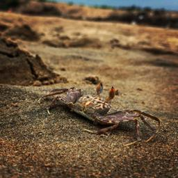 |
Author: djremo License: CC-BY-SA |
| 43 | Alone | 14 | 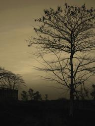 |
Author: bbarve License: CC-BY-SA |
| 44 | Street art | 14 | 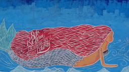 |
Author: wolnei License: CC-BY-SA |
| 45 | Pasadena_poppy | 13 | 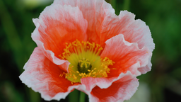 |
Author: n8inup License: CC-BY-SA |
| 46 | Late Fall Foliage in Tacoma, WA | 12 | 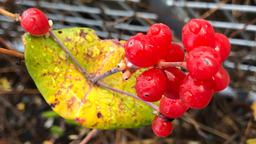 |
Author: Erik Beck License: CC-BY |
| 47 | Dagebüll | 12 | 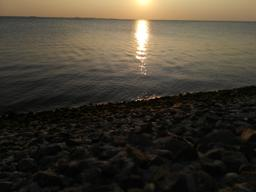 |
Author: Malcolm Stelter License: Free Art |
| 48 | buzios | 12 |

|
Author: evillagr License: CC-BY-SA |
| 49 | Posada | 11 |

|
Author: x3mboy License: CC-BY-SA |
| 50 | Birds heaven | 11 | 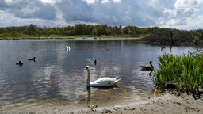 |
Author: Andrzej Rośkowicz License: Free Art |
| 51 | Central Park | 10 | 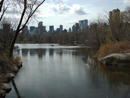 |
Author: Jackson Harmer License: CC0 |
| 52 | Montain's town | 9 |

|
Author: x3mboy License: CC-BY-SA |
| 53 | Head in the sand | 6 |

|
Author: joefidler License: CC-BY-SA |
{kind=link}
{kind=link}
{kind=link}
{kind=link}
{kind=link}
{kind=link}
{kind=link}
{kind=link}
{kind=link}
{kind=link}
{kind=link}
{kind=link}
{kind=link}
{kind=link}
{kind=link}
{kind=link}
{kind=link}